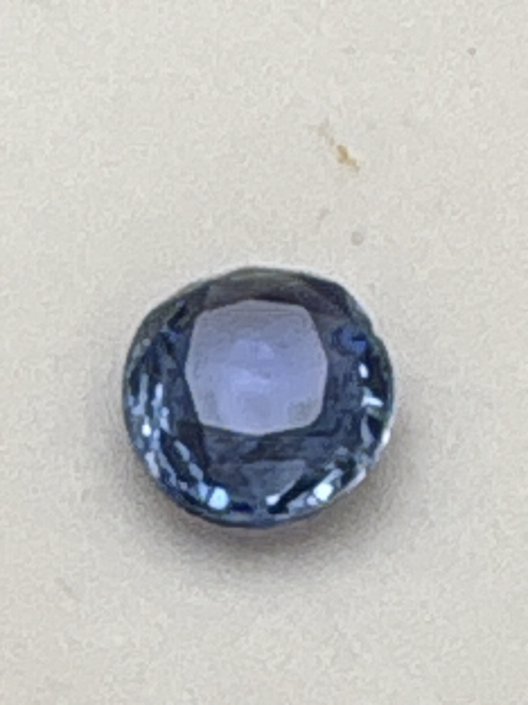

The Gem Drawer › No. 32

A pale lavender-blue sapphire, 7 x 5.5 mm.
| Catalogue no. | #32 |
|---|---|
| As labeled | Blue Sapphire (per handwritten note; printed label reads generic "MIX SAPPHIRE" - see notes) |
| Shape / cut | Round |
| Weight | 2.29 ct |
| Measurements | 7 x 5.5 |
| Colour | Pale lavender-blue |
| Clarity / condition | Not recorded |
Interested in this stone, or in the collection as a whole? Terry VanWormer can answer questions about it.
Click here to inquireor email Terry directly at maxrebo34@gmail.com